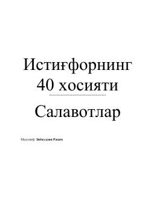

I4Istig'for aytishning fazilatlari va uning inson hayotidagi ahamiyati haqida ma'lumotlar.
Ushbu kitobda istig'for aytishning fazilatlari, uning inson hayotiga ta'siri va gunohlardan poklanish yo'llari bayon etilgan. Muallif istig'forning ruhiy va dunyoviy foydalarini Qur'on va hadislar asosida tushuntirib beradi.